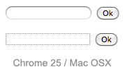
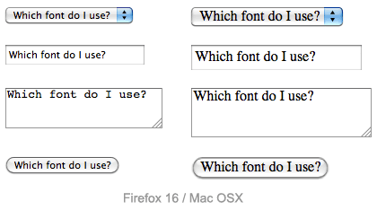
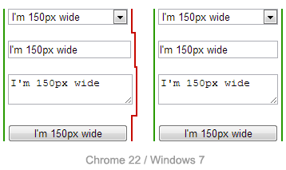

In this article, we will learn how to use CSS with HTML forms to make them (hopefully) more beautiful. Surprisingly, this can be a little bit tricky. For historical and technical reasons, form widgets don't mesh well with CSS. Because of those difficulties, many developers choose to build their own HTML widgets to gain control over their look and feel. However, with modern browsers web designers have more and more control over the design of form elements. Let's dig into it.
Why is it so hard to style form widgets with CSS?
In the early days of the Web—around 1995—form controls were added to HTML in the HTML 2 specification. Due to the complexity of form widgets, implementors chose to rely on the underlying operating system to manage and render them.
A few years later, CSS was created and what was a technical necessity—that is, using native widgets to implement form controls—became a style requirement. And in the early days of CSS, styling form controls was not a priority.
Because users are accustomed to the visual appearance of their respective platforms, browser vendors are reluctant to make form controls stylable; and to be honest, to this day it is still extremely difficult to rebuild all the controls to make them stylable.
Even today, not a single browser fully implements CSS 2.1. Over time, however, browser vendors have improved their support of CSS for form elements and, even though there's a bad reputation for its usability, you can nowadays use CSS to style HTML forms.
{kind=link}
Not all widgets are created equal when CSS is involved
At present, some difficulties remain when using CSS with forms; these problems can be divided in three categories.
The good
Some elements can be styled with few if any problems across platforms. These include the following structural elements:
This also includes all text field widgets (both single-line and multi-line) and buttons.
The bad
Some elements can rarely be styled and may require some complicated tricks, occasionally requiring advanced knowledge of CSS3.
These include the <legend> element; this cannot be positioned properly across platforms. In addition, checkboxes and radio buttons can't be styled directly; however, thanks to CSS3 you can work around this. placeholder content is not stylable in any standard way; however, all browsers that implement it also implement proprietary CSS pseudo-elements or pseudo-classes that let you style it.
We will see how to handle these specific cases in the article Advanced styling for HTML forms.
The ugly
Some elements simply can't be styled using CSS. These include all advanced user interface widgets such as range, color, or date controls as well as all the dropdown widgets, including <select>, <option>, <optgroup> and <datalist> elements. The file picker widget is also known not to be stylable at all. The new <progress> and <meter> elements also fall in this category.
The main issue with all these widgets comes from the fact that they have a very complex structure and CSS is not currently expressive enough to style all the subtle parts of those widgets. If you want to customize those widgets you have to rely on JavaScript to build a DOM tree you'll be able to style. We'll learn how to do this in the article How to build custom form widgets.
Basic styling
To style elements that are easy to style with CSS, you shouldn't face any difficulties, since they mostly behave like any other HTML element. However, the user-agent style sheet of every browser can be a little inconsistent so there are a few tricks that can help you style them more painlessly.
Search fields
Search boxes are the only kind of text fields that can be a little tricky to style. On WebKit based browsers (Chrome, Safari, etc.) you'll have to tweak it with the -webkit-appearance proprietary property. We will discuss this property further in the article: Advanced styling for HTML forms.
Example
<form> <input type="search"> </form>
input[type=search] {
border: 1px dotted #999;
border-radius: 0;
-webkit-appearance: none;
}

As you can see on this screenshot of the search field on Chrome, the two fields have a border set as in our example, but the first field is rendered without using the -webkit-appearance property where the second is rendered using -webkit-appearance:none. The difference is noticeable.
Fonts and text
CSS font and text features can be used easily with any widget (and yes, you can use @font-face with form widgets). However, browsers' behaviors are often inconsistent. By default, some widgets do not inherit font-family and font-size from their parents. And many browsers use the system default appearance instead. To make your forms' appearance consistent with the rest of your content, you can add the following rules to your stylesheet:
button, input, select, textarea {
font-family : inherit;
font-size : 100%;
}
The screenshot below shows the difference; on the left is the default rendering of the element in Firefox on Mac OS X, with the platform's default font style in use. On the right are the same elements with our font harmonization style rules applied.

There's a lot of debate as to whether forms look better using the system default styles or customized styles designed to match your content. This decision is yours to make as the designer of your site or Web application.
Box model
All text fields have complete support for every property related to the CSS box model (width, height, padding, margin, and border). As before, however, browsers rely on the system default styles when displaying these widgets. It's up to you to define how you wish to blend them into your content. If you want to keep the native look and feel of the widgets, you'll face a little difficulty if you want to give them a consistent size.
This is because each widget has their own rules for border, padding and margin. So if you want to give the same size to several different widgets, you have to use the box-sizing property:
input, textarea, select, button {
width : 150px;
margin: 0;
-webkit-box-sizing: border-box; /* For legacy WebKit based browsers */
-moz-box-sizing: border-box; /* For legacy (Firefox <29) Gecko based browsers */
box-sizing: border-box;
}

In the screenshot above, the left column is built without box-sizing, while the right column uses this property with the value border-box. Notice how this lets us ensure that all of the elements occupy the same amount of space, despite the platform's default rules for each kind of widget.
Positioning
Positioning of HTML form widgets is generally not a problem; however, there are two elements you should take special note of:
legend
The <legend> element is okay to style except for positioning. In every browser, the <legend> element is positioned on top of the top border of its <fieldset> parent. There is absolutely no way to change it to be positioned within the HTML flow, away from the top border. You can, however, position it absolutely or relatively using the position property, but otherwise it is part of the fieldset border.
Because the <legend> element is very important for accessibility reasons (it will be spoken by assistive technologies as part of the label of each form element inside the fieldset), it's quite often paired with a title and then hidden in an accessible way, like this:
HTML
<fieldset> <legend>Hi!</legend> <h1>Hello</h1> </fieldset>
CSS
legend {
width: 1px;
height: 1px;
overflow: hidden;
}
textarea
By default, all browsers consider the <textarea> element to be an inline block aligned to the text bottom line. This is rarely what we actually want. To change from inline-block to block, it's pretty easy to use the display property. But if you want to use it inline, it's common to change the vertical alignment:
textarea {
vertical-align: top;
}
Example
Let's look at a concrete example of how to style an HTML form. This will help make a lot of these ideas clearer. We will build the following "postcard" contact form:

HTML
The HTML is only slightly more involved than the example we used in the first article of this guide; it just has a few extra IDs and a title.
<form>
<h1>to: Mozilla</h1>
<div id="from">
<label for="name">from:</label>
<input type="text" id="name" name="user_name">
</div>
<div id="reply">
<label for="mail">reply:</label>
<input type="email" id="mail" name="user_email">
</div>
<div id="message">
<label for="msg">Your message:</label>
<textarea id="msg" name="user_message"></textarea>
</div>
<div class="button">
<button type="submit">Send your message</button>
</div>
</form>
CSS
This is where the fun begins! Before we start coding, we need three additional elements:
- The postcard background
- A typewriter font: The "Secret Typewriter" from fontsquirrel.com
- A handdrawn font: The "Journal" from fontsquirrel.com
{kind=link}
Now we can dig into the code. First, we prepare the ground by defining our @font-face rules and all the basics on the <body> element and the <form> element.
@font-face{
font-family : "handwriting";
src : url('journal.eot');
src : url('journal.eot?') format('eot'),
url('journal.woff') format('woff'),
url('journal.ttf') format('truetype');
}
@font-face{
font-family : "typewriter";
src : url('veteran_typewriter.eot');
src : url('veteran_typewriter.eot?') format('eot'),
url('veteran_typewriter.woff') format('woff'),
url('veteran_typewriter.ttf') format('truetype');
}
body {
font : 21px sans-serif;
padding : 2em;
margin : 0;
background : #222;
}
form {
position: relative;
width : 740px;
height : 498px;
margin : 0 auto;
background: #FFF url(background.jpg);
}
Now we can position our elements, including the title and all the form elements.
h1 {
position : absolute;
left : 415px;
top : 185px;
font : 1em "typewriter", sans-serif;
}
#from {
position: absolute;
left : 398px;
top : 235px;
}
#reply {
position: absolute;
left : 390px;
top : 285px;
}
#message {
position: absolute;
left : 20px;
top : 70px;
}
That's where we start working on the form elements themselves. First, let's ensure that the <label>s are given the right font.
label {
font : .8em "typewriter", sans-serif;
}
The text fields require some common rules. Simply put, we remove their borders and backgrounds and redefine their padding and margin.
input, textarea {
font : .9em/1.5em "handwriting", sans-serif;
border : none;
padding : 0 10px;
margin : 0;
width : 240px;
background: none;
}
When one of these fields gains focus, we highlight them with a light grey, transparent, background. Note that it's important to add the outline property in order to remove the default focus highlight added by some browsers.
input:focus, textarea:focus {
background : rgba(0,0,0,.1);
border-radius: 5px;
outline : none;
}
Now that our text fields are done, we need to adjust the display of the single and multiple line text fields to match, since they typically don't look the same at all by default.
The single-line text field needs some tweaks to render nicely in Internet Explorer. Internet Explorer does not define the height of the fields based on the natural height of the font (which is the behavior of all other browsers). To fix this, we need to add an explicit height to the field, as follows:
input {
height: 2.5em; /* for IE */
vertical-align: middle; /* This is optional but it makes legacy IEs look better */
}
<textarea> elements default to being rendered as a block element. The two important things here are the resize and overflow properties. Because our design is a fixed-size design, we will use the resize property to prevent users from resizing our multi-line text field. The overflow property is used to make the field render more consistently across browsers; some browsers default to the value auto and some default to the value scroll. In our case, it's better to be sure every one will use auto.
textarea {
display : block;
padding : 10px;
margin : 10px 0 0 -10px;
width : 340px;
height : 360px;
resize : none;
overflow: auto;
}
The <button> element is really convenient with CSS; you can do whatever you want, even using pseudo-elements!
button {
position : absolute;
left : 440px;
top : 360px;
padding : 5px;
font : bold .6em sans-serif;
border : 2px solid #333;
border-radius: 5px;
background : none;
cursor : pointer;
-webkit-transform: rotate(-1.5deg);
-moz-transform: rotate(-1.5deg);
-ms-transform: rotate(-1.5deg);
-o-transform: rotate(-1.5deg);
transform: rotate(-1.5deg);
}
button:after {
content: " >>>";
}
button:hover,
button:focus {
outline : none;
background: #000;
color : #FFF;
}
And voila! Feel free to try it yourself; as you'll see, it works!
Conclusion
As you can see, as long as we want to build forms with just text fields and buttons, it's easy to style them using CSS. If you want to know more of the little CSS tricks that can make your life easier when working with form widgets, take a look at the form part of the normalize.css project.
In the next article, we will see how to handle from widgets that fall in the "bad" and "ugly" categories.